Trip Report #3: Day 6 through Day 8
[Category: 100 Mile Wilderness] [link] [Date: 2010-07-17 00:47:56]
Day 6: Monday, June 21 (Cooper Brook Falls Leanto to White House Landing) 14.1mi (+1.2mi)
Early on in the hike I came to the conclusion that aiming to spend an evening at White House Landing (WHL) would be a good way to help me mentally and physically cope with the rigors of the hike. WHL is a well-known wilderness camp that willingly accommodates hikers. After the abuse of the previous day, I woke up determined to reward myself with some comforts at WHL. Dinner ended at 6PM which meant I would have to arrive prior to that time to enjoy a proper meal, a roof over my head, a much needed shower, and a hearty breakfast. My trip planning did not involve any resupply at WHL so it was not a necessity in that respect. Nonetheless, I had convinced myself that it would do my body well to have half a day of true relief. The morning had revealed blisters on nearly every toe and both heels and my feet cried as I slipped on my hiking shoes in spite of the immense care I took to loosen them. The hardest part of dealing with blisters on the trail is that they rarely improve. I had to continue knowing that the condition of my feet would worsen.
Throughout the day I encountered numerous southbound hikers who all shared a similar story. "We just started and we're going to Georgia!" they all exclaimed with enthusiasm. During my crossing of the Barren-Chairback range I saw an average of two to three hikers a day. Suddenly I was running into hikers (typically in pairs or groups) every hour. It did not take me long to surmise that the onslaught of southbound thru-hikers had begun. I had scheduled my northbound hike of the wilderness at a time when vast numbers of optimistic hikers were starting their southbound thru-hikes. This new volume of hikers increased throughout the last three days of the trip and it changed the experience of the hike dramatically for me.
With my mind set on reaching WHL I had to mentally negotiate a middle-ground of mile-crunching and enjoyment. I settled on building in time for an extended stop at lower Jo-Mary Lake which turned out to be very beneficial. There was a beautiful sand beach which almost appeared to be a small tropical paradise as I stepped out from the dense vegetation that surrounded the lake. I threw off my shoes and shirt and enjoyed a cool swim in the near-frigid lake. With the heat in the low-lying lake land I would dry in less than an hour anyways. Extra time was spent letting my feet breath and relax in the cool water. Blisters were now a huge issue and required constant attention and care. As I was tending to them, a short, gray-headed man emerged from the forest. He had a striking resemblance to a professor I had in college and appeared to handle himself in a similar fashion. We talked for a little bit and I gleaned a bit more information on how to find my way to WHL along with a demonstration of how he used birch bark to brace his shoe which was causing awful blisters on the back of his feet. I left him to enjoy the beach alone and disappeared back into the sun-speckled foliage of the trail.
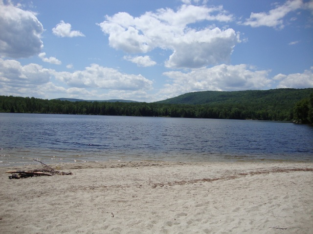
My little tropical paradise in Maine found on lower Jo Mary LakeUnfortunately, my break at the beach had consumed more time than I had originally planned for which led me to quicken my pace considerably. My mind raced and I began to experience the hike in a much different way. Unlike the previous days where I was concerned with foot placement, what mile I was on, where I would next find water, and how far the next shelter was, my mind began to automate these concerns and I began to think much more deeply about issues unrelated to the trail. I questioned why I wanted to attempt the hike, how it was that I had found myself alone again, whether or not I'd want to finish the hike after reaching WHL, and other questions that really had no answers. It became common for me to comment on things to myself. If I misplaced a step and slipped on a root I'd say "Whoa, easy there..." as if someone else was there and I had been watching them. I began to make numerous resolutions and decisions about what I would do when I completed the hike. I decided that I would try to pursue these thoughts and feelings when I returned since they seemed to come up with immediate importance even when the current situation had no bearing on them whatsoever.
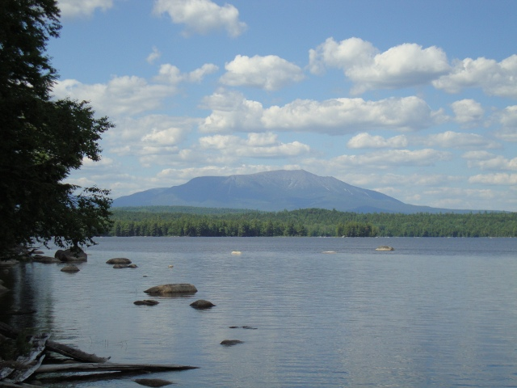
There were numerous views of Katahdin from the shores of lakesAll of the sudden I found myself at the Mahar Tote Road. On the trail it is marked as an arrow pointing towards Mahar Landing. It was not even 5PM, but I knew that there was still another 1.2 miles of hiking to be done in order to reach the dock where I could call for a ferry across the lake. On the 2009 MATC maps this is actually marked by a state campsite indicator. The side trail that leads to WHL ended up being the most obsessively marked trail I have ever encountered. It seemed to wind on forever down the shore of Pemadumcook Lake before I reached the dock. At the dock is an air horn and instructions to blow one short blast in order for a boat to come pick you up. After blowing the horn I rested on the dock as I watched a man come over in a speedboat to fetch me after only five or so minutes. I said hello to Bill and he took me back to WHL. I never imagined that things like grass, a glass window, and buildings would look so foreign. He led me into the dining area where I was presented with the important decision of what I wanted for dinner. I explained that I was a vegetarian and he promptly pointed out that they provide Boca burgers. I settled on two Boca burgers that were topped with anything they could find. I became the first person to ever eat a double Boca deluxe and I am quite confident I could have consumed a third.
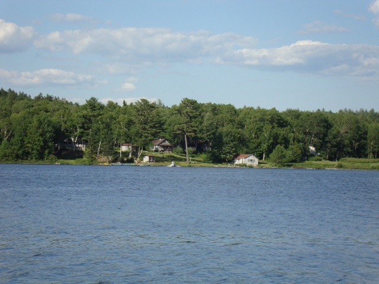
White House Landing from across Lake PemadumcookWhile in the dining area I met the others who were currently staying at the wilderness camp. My blister-covered toes and feet were wrapped in blood-stained tape and I caught most of the guests giving them a strong stare at some point during my Boca binge. There was a group of three which included a father, son, and the sons friend. The father initiated a conversation with me and after some time revealed that he had lived in Cincinnati as a child. We exchanged stories about the local sports teams and chili parlors (it's a big deal in Cincinnati). He was quite talkative and revealed that this was his second time attempting the wilderness. The previous year he had to be evacuated from Potaywadjo Leanto due to an infection that started in a huge blister on his foot. It eventually spread up his leg and got so severe that he now brandishes a scar on his leg that appears similar to an area of freshly sunburned skin. The only two others were a couple from Texas that were recently married. Their southbound hike was cut short when the young woman received a call from a potential employer in Houston about an interview. I was quite confused with the couple. They appeared amazingly unscathed from their first 32 miles in the wilderness and both were well-groomed and neither even remotely fit the hiker stereotype. They had taken a leisurely four days to complete the first 32 miles which is neither challenging nor strenuous compared to the next 70 they would have to complete. I would definitely have felt concern if they had been continuing southbound.
Linda (Bill's Wife) kindly called Shaw's in Monson for me where I was able to speak with Zach for the first time since we had said goodbye at West Chairback Pond. I was glad to learn that he was safe and feeling much better. He congratulated me on reaching WHL and gave some encouraging words for the rest of the hike. It was nice to speak with him again - it was the only familiar voice I had heard in quite some time. Linda spoke with Dawn at Shaw's for a bit and then showed me the restrooms, shower, and bunkhouse. Upon entering the bunkhouse I chose a ragged old mattress and pillow and immediately sought a much needed shower. The water at WHL is all pumped from the lake and there is no electricity. Showers are thus limited to 5 minutes of hot water. All of the buildings are lit by gas lanterns. Some extremists claim that a visit to WHL dilutes the wilderness experience but I would argue that it only enhances it. It's not like you're returning to civilization at all.
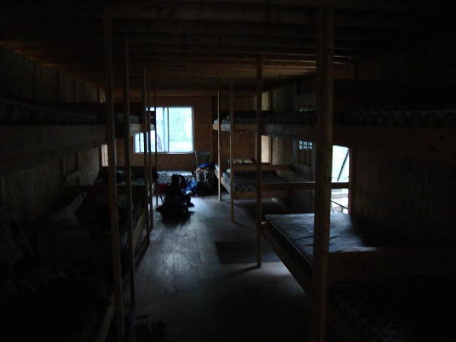
The inside of the bunkhouse at White House LandingFor the first time in days I had an evening of rest after I finished enjoying the brief shower. I got to know my other three bunkmates as we all relaxed watching the sun set over the lake. My blister routine was interrupted by the father who furnished me with an entire blister kit complete with medical tools I can't even name. I decided that calling him "Mr. Blister" was only appropriate. The kit sported various tools, ointments, pads, tapes, and bandages. He shared his knowledge of the world of blisters and provided me with some useful moleskin patches and advice on how to cope with the constant threat of blisters. After following his prescriptions the largest blisters on my heels were never a problem again. After the son and his friend finished a game of chess a discussion began about the book that the son had picked up upon arriving at WHL. It was written by a Russian author and I immediately commented that it was probably a somewhat depressing tale of a tortured soul. The son defended his choice and handed it to me where I read the back cover which described the novel as an enthralling tale of suffering, hardship, and a man forced to confront his largest fears. I felt my diagnosis was accurate. After some small talk, the three went to sleep and I watched the last minutes of twilight disappear before crawling onto the mattress which showed its age by squeaking and moaning obnoxiously with even the smallest shift in body position.
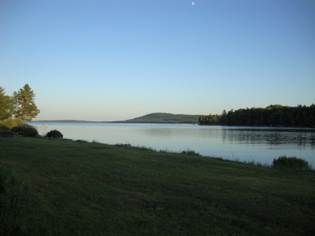
Earlier on in the evening looking out over the lake at White House LandingDay 7: Tuesday, June 22 (White House Landing to Rainbow Stream Leanto) 15.8mi (+0.2mi)
My body at this point had been trained to rise early. I woke up at 6:30AM, packed my gear, and walked over to the dining house where Bill was cooking up a hearty breakfast of eggs, bacon, and pancakes. I was somehow the last to arrive at breakfast and ended up cleaning out the remaining eggs and juice and followed it up with four pancakes. The father and son group were being driven to Millinocket where they would catch a bus to Bangor to fly home to Florida while the cute couple were utilizing Katahdin Air to get to Bangor and to fly to Houston. I would be resuming the trail alone once again. As a side note I will mention that along the trail I met hikers who spoke of the extortionist prices at WHL but I find that claim to be relatively baseless. One night includes breakfast and is only $39. Dinner costs extra, but my total bill did not add up to $60 for my entire stay. It was entirely worth it.
Bill discussed with me how many hikers are taken out from WHL each year and explained that it was not abnormal to have those staying the night end up seeking an exit from the wilderness. Last year was particularly harsh due to record rainfalls. We then hopped back into the boat and he took me to within .2 miles of the trail which saved me an entire mile of walking to start the day. I thanked him and he wished me luck before turning the boat around to head back to the wilderness camp.
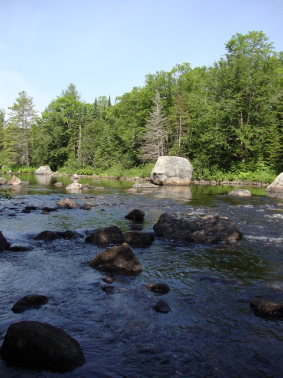
Nahmakanta stream
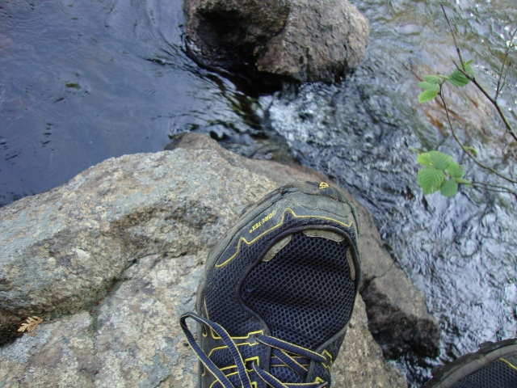
My Roclite GTX 312 shoes were showing some serious wear and tearFollowing Nahmakanta stream northward, I started my hike motivated by the fact that I would soon be entering the third and final map of the hike. Nothing screams progress like seeing a new unstained map. Invigorated by my stay at WHL, I sped through the trail stopping to take relaxing breaks by the stream until I walked into a clearing to find Wadleigh Stream Leanto. Throughout the wilderness it is not uncommon to find discarded items that hikers have discarded in desperate attempts to lighten their packs. Now that I was close to the northern end of the wilderness and there was a large influx of southbound hikers the occasional item changed into entire shelves full of unwanted items that once added weight to a burgeoning pack. The side of the trail was littered with cotton sweatshirts and jeans while the shelters had items such as nail polish, CD players, climbing rope, and entire fishing tackle kits. I amused myself by observing a courageous chipmunk who coaxed me into feeding him some of my Powerbar until a rather large man emerged from the trail. He had completed a thru-hike in 1995 and returns each year to hike the wilderness. After initial introductions, he described Springer Mountain in Georgia in March (southern terminus of the Appalachian Trail) as being an emporium of gear littered along the trail. Before I pushed on we compared gear and pack weight. He had started with 17lbs of gear for the entire wilderness and intended on completing in only four or five days.
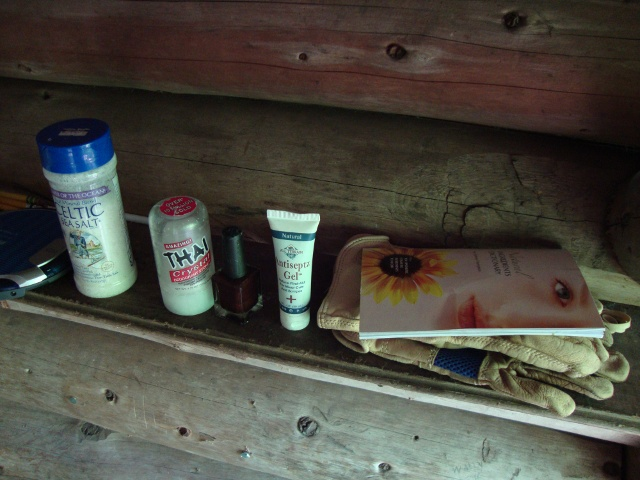
Some of the abandoned items at Wadleigh Stream Leanto
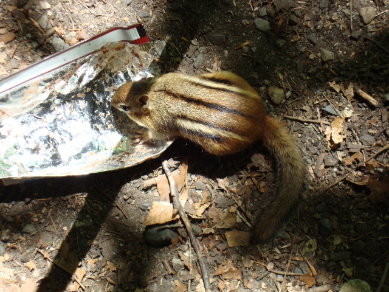
A fearless chipmunk who has probably been fed way too many energy bars
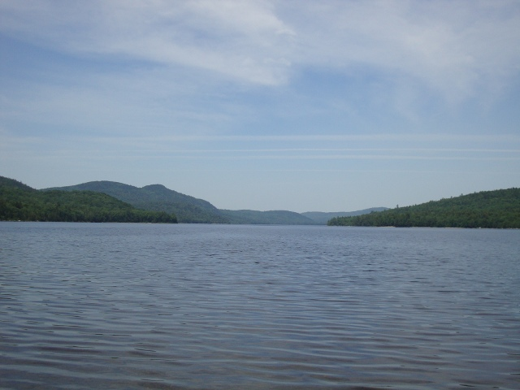
View from another quaint lake along the trail leading up to Nesuntabunt MountainNesuntabunt Mountain was the only remaining challenge for the day and is a relatively unrewarding climb sparing the rock cliff that provides views of Katahdin which is now the dominant feature of the landscape. Having watched it grow in the past three days had been an encouraging sign of my progress. The trail on Nesuntabunt was less than enjoyable due to its very strange placement, lack of clear blazes, and lack of management. At this point of the hike I was becoming somewhat discontent and irritable as the trail winded back and forth and oscillated direction in such a fashion that I was never sure which way I was truly heading. There were multiple times where I swore I was walking backwards since the path of the trail more closely resembled the scribbles of a toddler than a hiking trail. After finishing Nesuntabunt, the terrain became increasingly boggy and muddy as I entered the last miles of the hike. The trail, which was already dominated by roots and rock, became a single mass of root and large rock fragments which tortured my feet in a way like they had not experienced previously. In locations where a break from the roots and rock was offered my feet suffered from the ever-present moisture. It was evident to me that the last day of the hike would be the hardest on my feet yet.
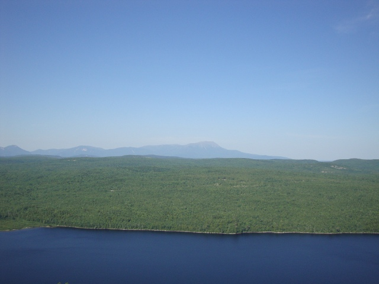
View of Katahdin from a rock cliff near the summit of Nesuntabunt MountainBattling the roots and rocks eventually led me to Rainbow Stream Leanto where there was a single occupant. I debated for 10-15 minutes on whether or not I should push on to the Rainbow Spring Campsite which would make my final day of hiking shorter and more friendly towards my feet which were deteriorating rapidly. Throughout the day it had been spitting rain and I decided that the comfort of the shelter was worth taking advantage of. I occupied the shelter and met the other occupant who had been napping in his tent which was cleverly placed in the shelter much like I had been utilizing the MSR Hubba HP inner wall. He had just graduated from Cornell University in the spring and had amassed $200,000 in debt while pursuing an engineering degree. Throughout the evening we talked and it was clear that we understood one another well and we both appreciated the same kind of sarcastic humor which is common in my generation. He was keen to find out about some of my strategies and asked many questions about the trail, cooking, food, and foot care.
I had seen more southbound hikers than any previous day and all of their stories were the same. They were mostly couples or groups and all had the same story. I ceased the ritual of asking each person where they started and where they were going since their stories were all the same. "We're going to Georgia!" they would all exclaim with such enthusiasm and optimism that it was almost nauseating at times. My shelter mate was no exception, though he was clearly more prepared and was commencing a solo hike. For him, hiking the entire Appalachian Trail was a better option than immediately confronting the massive debt that awaited him back home. While I always wished each hiker the best, the obvious lack of preparation that many of them exhibited was both worrisome and disappointing. It was their discarded gear that would continue to litter the shelters and the trail.
As I tended to my feet the other shelter occupant cringed as I exposed tender skin by unwrapping bloodied bandages. He winced as I drained the larger blisters and I assured him he'd find himself in my position before too long. Before bedding down for the night I had to consider what my plan of attack would be for the final day of the hike. I desperately wanted to complete the hike the next day, but the issue was complicated by a folly that I committed on the morning of the fourth day. When Zach had departed, I left him with the key to the car which was parked at Abol Bridge under the belief that he would find his way there at some point. He had been shuttled back to Monson and had opted to be shuttled to Abol Bridge on Thursday (a day after I would be finishing) with a group to save money where he would then finally get access to the car. The first option was to stay at Hurd Brook Leanto which was only 3mi away from Abol Bridge. I had no intention of taking this option at this point. The second option was to finish the hike then stay at a campground near Abol Bridge and wait for Zach. This seemed realistic at the time, but I had honestly had enough of the outdoors and had quite a burning desire for a proper bed, sheets, a shower, and a few good meals. This led me to opt for the third option which was to hike to Abol Bridge then call for a shuttle into Millinocket to stay at a hiker lodge.
I slept well until the rain began to fall with an intensity like I hadn't seen before in Maine. It continued throughout the night and into the morning where I knew it would be ongoing throughout the last day of the hike.
Day 8: Wednesday, June 23 (Rainbow Stream Leanto to Abol Bridge) 15.0mi
Sporadic rain the previous day had given way to showers during the night and neither I nor my shelter mate had any desire to trudge out onto the muddy trail. At least I had the luxury of it being the last day of my hike. The rain did not cease for the rest of the day and eventually infiltrated my waterproof hiking shoes from the top down. Moisture opened up a new door of pain for my feet and each step eventually required a teeth-clenching effort. My left pinkie toe was in the worst condition and the blister swelled enough by midday that it was pressing upwards against the toenail. I was at risk of losing the toenail and each wrong step I made that wrongly placed pressure onto the toe sent a painful reminder of its condition. Any bandages I placed on the feet were rendered useless by the inundated shoes. I managed to shift my thoughts off of the pouring rain and the poor condition of my feet by focusing on completing the hike. I resolved to buy a cold soda and some skittles (I love them) at the Abol Bridge store as a reward for completing the hike.
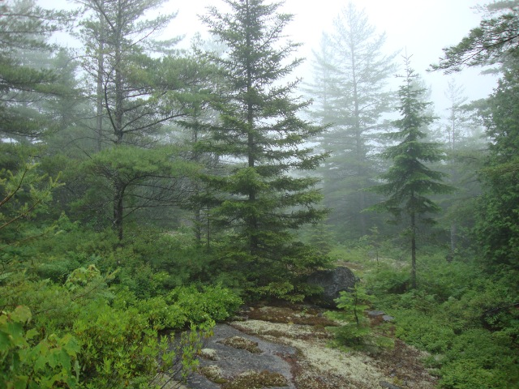
The surreal landscape altered by a wildfire decades agoThe most rewarding experience of the last two days was slowly walking the top of a few small bulges of the landscape which had been devastated by a forest fire around fifty years ago. The rain and mist combined with the songs of birds to provide me with an almost surreal experience. I must have spent over half an hour just sitting on the open rocks trying to understand what made it so attractive and unreal. I forced myself to consume a logan bread bar before continuing on. My mind had turned its attention toward what I would do after the hike and I, once again, began to make resolutions. The walk toward Hurd Brook was a blur.
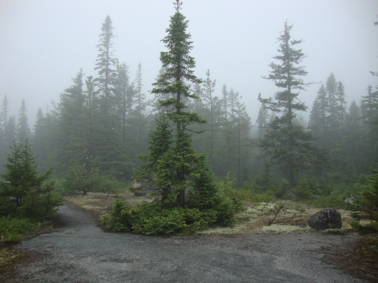
It was easy to just sit, listen, and relax
Not 100 yards before arriving at Hurd Brook Leanto you are required to cross Hurd Brook which is listed as a ford but actually can be done with some careful boulder hopping. Too focused on the shelter, I jackknifed my foot in a crevice which led me to yelp in pain which caught the attention of the overpopulated shelter. I must have looked absolutely wretched as I limped up to the shelter in the downpour leaning on my hiking pole for support. The occupants were all young, male, and had the same optimism that the other southbound thru-hikers all shared. They were only three miles into the wilderness and their enthusiasm was drowned by the onslaught of two days of rain. While I removed my feet and tended to the blisters they all watched intently - it was the only entertainment to be had. I wished them all luck and gave them a few warnings about the trail ahead before beginning the final miles of the hike.
The last push to Abol was uneventful. I was weary, wet, and tired, but the thought of the end led me onward unfailingly. Closing in on the end of the trail yielded louder and louder sounds of logging trucks barreling across Abol Bridge. As I broke out of the forest and onto the road I finally felt relief and was warmed by a feeling of accomplishment. It was, curiously, not a particularly powerful experience. I suppose that it truly is about the journey and not the destination. I waddled toward my car (which I could not get into) then dragged my soaked body into the camp store where I, disappointingly, found no skittles. I drank a cream soda and ate some chili cheese Fritos.
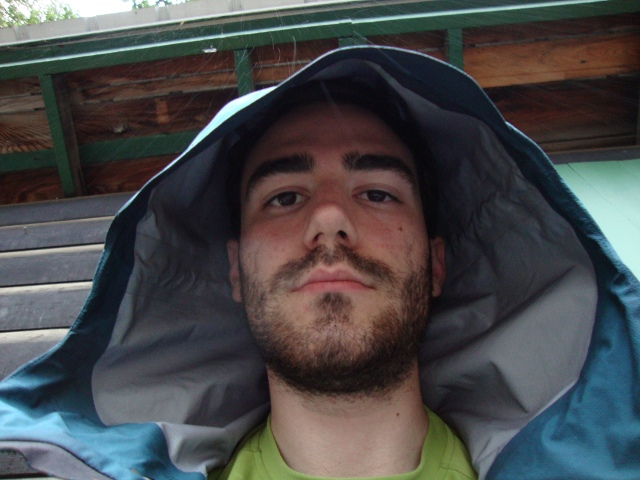
What I looked like waiting in the rain after over 100 miles of hiking and 8 days in the wildernessAfter relaxing a bit I had to decide on a plan of action. I had over 14 hours until Zach would arrive and provide access to the car. I ended up calling Zach in Monson to have him talk to Dawn about what my best option was. She recommended I stay at the AT lodge in Millinocket and I called Paul Renaud who owns and operates the lodge and cafe. He never answered his phone and the pay phone was an annoying contraption that was actually a cell phone. I wasted over $2 attempting to contact him. When he finally picked me up he explained that he can never make out what people say when they use the pay cell phone since the service is so poor. I was picked up at 7:30PM which was quite late and prevented me from getting a proper meal in town. I was so worn and fatigued that I scrapped the whole evening and laid down on the first fresh sheets I had seen since Monson, ME after a long shower. I planned on getting up for a huge breakfast at the AT cafe. I had the entire lodge to myself except for a short, older man who was hiking Katahdin tomorrow to begin his hike to Damascus, VA. He had flip-flopped there when he injured himself and needed surgery during the previous year.
I fell asleep content that I had proved to myself that I could push myself physically and mentally to levels I was not aware I was capable of. A deep longing to return home and to see things that were familiar to me surfaced. I romanticized my return and thought about my cats, my own bed, my family, my friends, and even the predictability and security of my job. I made note of many of the resolutions I made during the last three days of my hike and still felt determined to see some of them through. They had become important to me and an integral part of the experience. I clung to the cotton sheets that had been used and enjoyed by countless battered hikers before me and could not bring myself to use the pillow which now felt uncomfortable to me after over a week of sleeping in the absence of one.
Thursday, June 24
I woke up early and headed to the AT cafe where I ordered an enormous omelet, English muffins, home fries, a fruit cup, and juice. I hadn't eaten for quite some time and gorged myself on the heaping breakfast. I found a small store in town and finally purchased the pack of skittles which I had rightfully earned the previous day. I had no idea when Zach would be arriving at the AT lodge to pick me up so I ate my skittles while completing a 500 piece jigsaw puzzle I found under a stairwell in the lower floor of the lodge. I finished it in just over three and a half hours moments before Zach arrived. We began the long journey home and made sure to stop at a Chipotle in Massachusetts for me to do some much-needed calorie binging. We drove straight through and took turns at the wheel for nearly 21 hours. Zach had stories about interesting hikers he met at Shaw's while I shared tales of the wilderness. As we arrived back at our homes I'm sure we both felt a comforting wave of relief to be reunited with what was familiar and safe.
I will be making one last post of afterthoughts and final words along with a discussion on things that I would change if making the trip again. I am also encouraging Zach to write up an entry about his experience.